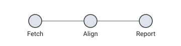
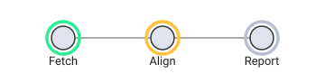
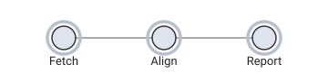
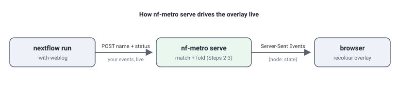

The data manifest¶
Stable since 1.0
The manifest schema, diagram-manifest element id, and data-node-*
attribute names are stable as of nf-metro 1.0 and covered by semantic
versioning. Incompatible schema changes will bump the version field and
the nf-metro major version together.
Every SVG nf-metro renders is a self-describing, addressable artifact: a downstream tool can drive it - position overlays, restyle nodes, look up which processes a node represents - from the committed file alone, without re-running whatever drew it.
That contract is not specific to metro maps. This page documents the format as a standalone standard and the tooling nf-metro ships to produce and consume it, so any diagram tool can emit a conforming SVG. nf-metro is just the first producer.
Just want to make one? Start with the tutorial
If your goal is simply to produce an SVG and drive it from events, skip the spec and jump to the tutorial: it builds one end to end and finishes with a single script you can copy and run. The sections in between are the format reference, aimed at implementers.
Headed for its own package
The tooling lives in nf_metro.manifest, a dependency-free module (Python
standard library only, no other nf-metro imports). It is structured so it can
later be lifted into its own distribution as-is; until then, import it from
nf-metro.
Terminology¶
The format is tool-neutral, so its vocabulary is generic rather than metro-flavoured:
| Term | Meaning |
|---|---|
| manifest | The JSON description of the diagram, embedded in the SVG. |
| node | An addressable point on the diagram - the thing a consumer locates, restyles, or lights up. Has an id, a centre (x/y), a radius (r), and an optional label. |
| group | An optional multi-membership category a node can belong to several of, each with a display color (e.g. a colour-coded series). |
| region | An optional single-membership container a node sits inside (e.g. a labelled box). |
| pattern | A regex on a node that identifies it against a runtime string. A node carries zero or more. |
| target | What the patterns are matched against, named in the manifest's match block (for a Nextflow run, the fully-qualified process name). |
A producer with no grouping concept uses nodes alone and leaves groups and
regions empty.
How nf-metro maps onto it¶
nf-metro draws metro maps, so its own code, .mmd files, and live server speak
metro: stations, lines, sections, processes. The renderer's adapter
translates those into the neutral wire vocabulary, so the SVG you get is in the
generic terms above:
| nf-metro (metro) | Manifest (neutral) |
|---|---|
| station | node |
| line | group |
| section | region |
%%metro process: patterns |
node patterns |
So if you author a metro map but read the rendered SVG, you'll find nodes, not
stations - that is expected, and it's what makes the file portable.
What's in the file¶
The data is carried two redundant, sanitization-safe ways - no <script>, so
it survives the inline-SVG sanitizers a host web app typically runs:
- A JSON manifest in a
<metadata id="diagram-manifest">element. data-node-*attributes on each node's wrapping<g>.
A node's id is the join key: it equals data-node-id="<id>" on the
element, so a consumer can go manifest→element and element→manifest without
guessing.
Manifest schema¶
{
"version": "1.0",
"match": { "target": "fqProcessName", "type": "regex", "flags": "i" },
"title": "nf-core/rnaseq",
"width": 1829,
"height": 724,
"groups": [ { "id": "star_salmon", "label": "STAR + Salmon", "color": "#e64949" } ],
"regions": [ { "id": "preprocessing", "label": "Pre-processing" } ],
"nodes": [
{
"id": "fastqc",
"label": "FastQC",
"x": 120.0, "y": 80.0, "r": 5.0,
"groups": ["star_salmon", "star_rsem"],
"region": "preprocessing",
"patterns": ["FASTQC", "MULTIQC"]
}
]
}
nodesare the addressable points - every node in the diagram. Unmapped ones carry an emptypatternslist, so the manifest is a complete inventory, not only the subset that lights up.idjoin key - equalsdata-node-id="<id>"on the element.- Coordinate space -
x/y/rare absolute SVG user units insideviewBox="0 0 width height"(the producer must emit no outer transform), so an overlay sharing that viewBox lines up exactly.ris a single nominal marker radius. Coordinates are rounded to one decimal place. groups/regionsare optional metadata; a node references them by id (node.groups,node.region).- Forward compatibility - consumers MUST ignore unknown fields; additive
fields keep the same major
version.
A machine-readable JSON Schema (draft 2020-12) ships with the package
(nf_metro/manifest/schema.json); manifest_schema() returns it as a dict. Its
required fields are exactly the minimum-conforming
set.
To validate an SVG, read its manifest out and check it against the schema. In
Python (pip install jsonschema - it is not an nf-metro runtime dependency):
import jsonschema
from nf_metro.manifest import read_manifest, manifest_schema
manifest = read_manifest(open("pipeline.svg").read())
if manifest is None:
raise SystemExit("no diagram manifest embedded in this SVG")
jsonschema.validate(manifest, manifest_schema()) # raises ValidationError if it doesn't conform
Or from the command line, without writing any code:
nf-metro validate-svg pipeline.svg
# Valid: 42 nodes, schema version 1.0 (exits non-zero if it doesn't conform)
(validate-svg uses jsonschema; install it with pip install jsonschema if it
isn't already present.)
Add --geometry to also check the drawn picture, not just the schema: it flags
a route drawn through a station's label or marker (rail interchanges excepted).
The offset-collapse check (distinct lines merging into one stroke) needs the
engine's assigned offsets, so it runs only via render --validate.
In another language, extract the <metadata id="diagram-manifest"> JSON the same
way and feed it, with the shipped schema.json, to any standard JSON Schema
validator.
Per-node attributes¶
<g data-node-id="fastqc"
data-node-cx="120.0" data-node-cy="80.0" data-node-r="5.0"
data-node-groups="star_salmon,star_rsem"
data-node-region="preprocessing">
...the node's drawn glyph...
</g>
The geometry attributes mirror the manifest's x/y/r, so a consumer can
position against either half interchangeably. data-node-region is omitted when
the node belongs to no region. (A producer may add its own attributes or classes
alongside these - nf-metro tags the group nf-metro-station-group, for example -
but only the data-node-* set is part of the contract.)
Matching semantics¶
patterns are regular expressions matched case-insensitively against a
runtime target string. The match block names the target so a non-Python (and
non-Nextflow) consumer can reproduce the rule: for a Nextflow run the target is
the fully-qualified process name (NFCORE_RNASEQ:RNASEQ:FASTQC); another
producer sets target to whatever identifier its runtime emits.
Keep patterns within a portable regex subset common to Python re and
JavaScript RegExp - character classes, anchors, ./*/+/?, bounded
{m,n}, alternation, groups - so two implementations cannot diverge. Avoid
Python-only constructs (named groups (?P<>), inline flags (?i), possessive
quantifiers, \Z).
A target may legitimately match more than one node; how to resolve that is a consumer-side policy decision, not a schema error.
Minimum to be conforming¶
The shortest path to a file a consumer can drive:
Required - an overlay positions itself from these alone:
- An SVG root with
viewBox="0 0 width height"and no outer transform. - Exactly one
<metadata id="diagram-manifest">holding the JSON, with at leastversion,width,height, andnodes- each node carrying anidandx/y/r.
Required only for matching (e.g. lighting up nodes from a running job):
- The
matchblock (target/type/flags) and apatternslist on each node that represents something.
Recommended - lets a consumer find and restyle the drawn node in place (rather than only overlaying on top):
- Wrap each node's glyph in a
<g>withdata-node-id="<id>"(matching the manifestid) anddata-node-cx/-cy/-r.
Everything else (label, groups, regions, the live state model below) is
optional.
The functions¶
The whole toolkit is a handful of small functions, all importable from
nf_metro.manifest (and re-exported from nf_metro.render). Grouped by job:
| Function | What it does |
|---|---|
build_manifest_data(*, title, width, height, nodes, groups=(), regions=(), match_target="fqProcessName") |
Assemble the manifest dict from plain node data. Rounds coordinates; fills the match block. |
node_data_attrs(*, id, x, y, r, groups=(), region=None) |
Return the data-node-* attributes for one node's element, as a dict to spread onto your <g>. |
manifest_metadata_svg(manifest) |
Return just the <metadata> element (as a string) - use it when you assemble the SVG yourself. |
inject_manifest(svg, manifest) |
Insert that <metadata> into an existing SVG string, right after the opening <svg> tag. Returns the new SVG. |
read_manifest(svg) |
Parse the embedded manifest back out of an SVG string; returns the dict, or None if there's no manifest. |
match_node_ids(manifest, target) |
Node ids whose patterns match target (case-insensitive) - "which node does this runtime name light up?". |
matching_node_ids(target, patterns_by_id) |
The same matcher over a plain {id: [pattern]} map, when your data isn't a full manifest. |
overlay_svg(manifest, body="", *, extra_attrs="") |
A transparent overlay <svg> sized to the manifest's viewBox, to stack over the base so coordinates line up. |
manifest_json(manifest) |
Deterministic JSON serialization of a manifest (sorted keys); rarely needed directly. |
manifest_schema() |
Return the JSON Schema (draft 2020-12) for a manifest, to validate a producer's output in any language. |
Producing a file uses the first four; consuming one uses read_manifest +
match_node_ids; a live overlay adds overlay_svg. The two constants
MANIFEST_SCHEMA_VERSION and MANIFEST_ELEMENT_ID ("diagram-manifest") are
exported too. The rest of this page shows them in context.
Produce a conforming SVG¶
In Python (any diagram, not just metro maps)¶
nf_metro.manifest builds a manifest from plain node data and embeds it into an
SVG you drew by any means - it never needs a MetroGraph:
from nf_metro.manifest import (
build_manifest_data, node_data_attrs, inject_manifest,
)
manifest = build_manifest_data(
title="My Tool",
width=100, height=100,
nodes=[
{"id": "trim", "x": 50, "y": 50, "r": 4, "patterns": ["TRIM.*"]},
],
)
# Decorate the node's element with the addressable mirror...
attrs = node_data_attrs(id="trim", x=50, y=50, r=4)
attr_str = " ".join(f'{k}="{v}"' for k, v in attrs.items())
svg = f'<svg viewBox="0 0 100 100"><g {attr_str}><circle cx="50" cy="50" r="4"/></g></svg>'
# ...and splice the manifest in after the opening <svg> tag.
svg = inject_manifest(svg, manifest)
Each nodes entry takes required id, x, y, r and optional label
(defaults to id), groups, region, and patterns. Coordinates are rounded
for you. groups and regions are optional grouping metadata.
A node is addressed as a centre point plus a nominal radius (overlay-shaped,
not the full glyph outline). If your nodes are boxes, pass the box centre as
x/y and a representative radius for r - an overlay only needs somewhere to
anchor, not your exact geometry.
If your runtime doesn't emit Nextflow process names, set match_target to the
identifier it does emit, so the file honestly describes what its patterns
match:
build_manifest_data(..., match_target="stepName")
# -> "match": { "target": "stepName", "type": "regex", "flags": "i" }
In any language¶
You don't need this library to produce a conforming file - emit the bytes directly:
- Draw your SVG with
viewBox="0 0 width height"and no outer transform. - Insert a
<metadata id="diagram-manifest">element holding the JSON above as CDATA. (CDATA cannot contain]]>; if a regex does, split it as]]]]><![CDATA[>.) - (Recommended) For each node, wrap its glyph in a
<g>carryingdata-node-id(a stable id) anddata-node-cx/-cy/-r(its centre and radius, 1dp). Keep this geometry in agreement with the manifest -idis the join key between them.
Read and match¶
nf_metro.render re-exports the canonical reader and matcher (also available
from nf_metro.manifest):
from nf_metro.render import read_manifest, match_node_ids
manifest = read_manifest(open("pipeline.svg").read())
match_node_ids(manifest, "NFCORE_RNASEQ:RNASEQ:FASTQC") # -> ["fastqc"]
read_manifest is a plain regex extract (no XML library needed); a consumer in
another language reproduces the matcher by walking nodes[].patterns and testing
each regex case-insensitively against the target, collecting the ids that hit.
match_node_ids takes a whole manifest (keyed on the schema's nodes).
matching_node_ids is the same matcher over a plain id -> [pattern] mapping,
for a producer whose data isn't manifest-shaped.
Drive a live overlay¶
Everything above defines the compatibility contract; the state model below is optional convention. A consumer that only needs static addressing can stop here.
Worked example
The tutorial at the end of this page builds a tiny pipeline diagram and lights it up from a progress snapshot, end to end, in ~40 lines.
The manifest gives an overlay everything it needs without a re-render: the
viewBox to share, and each node's id, centre, and radius. The standard
fixes the geometry and the addressing, not the visual style - how you draw
"running" vs "done" is yours.
A common shape for progress is a small per-node state model:
| Field | Meaning |
|---|---|
state |
One of pending, queued, running, done, failed. |
done / total |
Tasks finished vs seen so far for that node. Nextflow's task count is dynamic, so this is "done / submitted so far", not a fixed percentage. |
plus a run-level { name, state } where state is idle / running /
complete / error.
nf-metro's serve is one reference implementation of this: it draws a glowing
LED halo per node and recolours it by state (see Live progress). A
host application is free to map the same state vocabulary onto its own visual
language - filled badges, a progress bar, a colour change on the node itself.
Take the geometry and the state model from the standard; bring your own paint.
To turn a specific runtime's events into that state model, write a binding.
nf-metro ships one for Nextflow's -with-weblog stream; that path, the server,
and the Nextflow plugin are documented under Live progress.
Tutorial: light up a diagram as a job runs¶
A complete, self-contained example for a tool that is not nf-metro. By the
end you'll have a small pipeline diagram that shows progress as work happens -
and you can run every snippet here as-is, with no pipeline, no server, and no
Nextflow (we'll fake the progress). About 50 lines, only nf_metro.manifest.
The idea. Draw the diagram once and embed a manifest in it. Then, whenever progress changes, draw a thin overlay of status markers on top. The diagram itself never re-flows; only the lightweight overlay updates. The mental model: the base SVG is the map - drawn once and durable - and the overlay is a cheap, disposable status layer you redraw as things change. We'll model a three-step pipeline - Fetch → Align → Report.
What's doing the work. The only library is nf_metro.manifest - the
standard-library-only module described above. No MetroGraph, no nf-metro
renderer, no drawing or templating library: we assemble the SVG as plain Python
strings and use nf_metro.manifest for the four manifest-specific jobs - build
it (build_manifest_data), embed it (node_data_attrs, inject_manifest), read
it back (read_manifest), and match runtime names to nodes (match_node_ids).
Step 1 - draw the diagram and embed a manifest¶
We hand-draw three circles (one per step), wrap each in a <g> carrying its
data-node-* attributes, and splice in the manifest. Don't worry about absorbing
every field; the only new ideas here are that each node needs coordinates, and
that the manifest gets embedded into an otherwise ordinary SVG.
- For now, the fields that matter are
idandx/y/r- the node's name, and where it sits and how big it is (an overlay anchors here). - Later:
patterns(the names this node answers to) andmatch_targetare for Step 2's matching; you can ignore them until then. We'll match against step names, somatch_target="stepName".
from nf_metro.manifest import (
build_manifest_data, node_data_attrs, inject_manifest,
read_manifest, match_node_ids,
)
NODES = [
{"id": "fetch", "label": "Fetch", "x": 70, "y": 42, "r": 13, "patterns": ["FETCH"]},
{"id": "align", "label": "Align", "x": 180, "y": 42, "r": 13, "patterns": ["BWA.*", "STAR.*"]},
{"id": "report", "label": "Report", "x": 290, "y": 42, "r": 13, "patterns": ["MULTIQC"]},
]
W, H = 360, 92
def node_svg(n):
attrs = " ".join(
f'{k}="{v}"'
for k, v in node_data_attrs(id=n["id"], x=n["x"], y=n["y"], r=n["r"]).items()
)
return (
f'<g {attrs}>'
f'<circle cx="{n["x"]}" cy="{n["y"]}" r="{n["r"]}" fill="#dfe3ee" stroke="#333"/>'
f'<text x="{n["x"]}" y="{n["y"] + 30}" text-anchor="middle" font-size="13">{n["label"]}</text>'
f'</g>'
)
edges = (
'<line x1="83" y1="42" x2="167" y2="42" stroke="#aaa"/>'
'<line x1="193" y1="42" x2="277" y2="42" stroke="#aaa"/>'
)
base = (
f'<svg xmlns="http://www.w3.org/2000/svg" viewBox="0 0 {W} {H}" width="{W}" height="{H}">'
f'{edges}{"".join(node_svg(n) for n in NODES)}</svg>'
)
svg = inject_manifest(
base,
build_manifest_data(
title="Toy pipeline", width=W, height=H, nodes=NODES, match_target="stepName"
),
)
Three functions did the work: node_data_attrs produced each node's
data-node-* attributes, build_manifest_data assembled the manifest from the
node list, and inject_manifest placed that manifest inside the SVG. svg is now
a self-describing file - three labelled nodes plus a <metadata
id="diagram-manifest"> block and data-node-* attributes. Save it to a .svg if
you like; everything below works from that file alone.

Step 2 - connect the diagram to the work¶
Something has to actually run your pipeline's steps - a workflow engine, a CI
job, a plain script. Call it the runtime. As it works, it announces each step
by a name: it might log that a step called BWA_MEM has started, then that it
finished, and so on.
Two snags: you usually don't choose those names (a tool may call your "Align" step
BWA_MEM or STAR_ALIGN), and they rarely equal your node ids. That's exactly
what each node's patterns are for - regexes that match the names your runtime
uses. match_node_ids answers the question "which node does this name belong
to?":
manifest = read_manifest(svg)
match_node_ids(manifest, "BWA_MEM") # -> ['align']
match_node_ids(manifest, "multiqc") # -> ['report'] (matching is case-insensitive)
Nothing is running yet - this just queries the file. Matching is the bridge from "a name the runtime mentioned" to "a node on the diagram".
Step 3 - show progress¶
Give each node a state - one of pending, queued, running, done,
failed - and draw a coloured ring per node at its manifest position. The colours
are your choice; the standard only tells you where each node is:
COLORS = {
"pending": "#b8c0d0", "queued": "#ffb020",
"running": "#ffc23a", "done": "#2bee92", "failed": "#ff4d4d",
}
def progress_halos(manifest, states):
"""One status ring per node, positioned from the manifest geometry."""
return "".join(
f'<circle cx="{n["x"]}" cy="{n["y"]}" r="{n["r"] + 5}" fill="none" '
f'stroke="{COLORS[states.get(n["id"], "pending")]}" stroke-width="3.5"/>'
for n in manifest["nodes"]
)
We have no real runtime in a tutorial, so let's simulate one. Here is a list
of (step_name, new_state) announcements - the kind of thing a real engine sends
as a run progresses. We fold each into a {node_id: state} map (using Step 2's
matcher) and redraw the overlay; that sequence of redraws is the animation:
# A real runtime would send these live; we hard-code them so the tutorial runs
# on its own.
events = [
("FETCH", "running"), ("FETCH", "done"),
("BWA_MEM", "running"), ("BWA_MEM", "done"), # the Align step, by its tool name
("MULTIQC", "running"), ("MULTIQC", "done"), # the Report step
]
states = {}
for name, new_state in events:
for node_id in match_node_ids(manifest, name):
states[node_id] = new_state
frame = svg.replace("</svg>", progress_halos(manifest, states) + "</svg>")
# draw `frame`: write it to a file, or update the page in a browser
A single frame - say just after Fetch finished and Align started, when states
is {"fetch": "done", "align": "running"} - looks like this (green = done,
amber = running, grey = still pending):

Replaying the whole events list redraws the overlay step by step, which
animates the run from start to finish:

The rings are deliberately plain - swap in pulses, fills, per-node counts, or your own palette without touching the contract.
Step 4 - plug in a real runtime¶
Up to now everything ran in one Python script; in a real system the same logic is
split between an event source (whatever runs your pipeline) and a UI
(usually a browser). The good news is that only one thing in this tutorial was
fake: the hard-coded events list. Replace it with announcements from a real run
and nothing else changes - you still match_node_ids each name to a node
(Step 2) and fold it into the states map that progress_halos draws (Step 3).
What Nextflow does, in the tutorial's terms. Run a pipeline with
nextflow run ... -with-weblog http://localhost:8080/events and Nextflow becomes
the source of that events list: every time a task is submitted, starts, or
finishes it POSTs a small JSON message to that URL carrying the process name and
its status - i.e. it sends you ("BWA_MEM", "running"), then ("BWA_MEM", "done"),
live, instead of you writing them out.
What nf-metro serve is. It's this exact tutorial running as a small web
server, so you don't write any of the Python yourself:
- it renders the diagram's SVG once and builds an overlay of one ring per node,
positioned from each node's coordinates - the same idea as
progress_halos; - it listens on
http://localhost:8080/;/eventsis the URL Nextflow POSTs to; - on each message it runs Step 2 (
match_node_idson the process name) and Step 3 (fold the result into a per-nodestatesmap); - it pushes the updated
statesto the open browser page over Server-Sent Events, and the page recolours the matching overlay ring.

So nf-metro serve is the tutorial wired to a live event source and a browser.
See Live progress to actually run it (it also has a multi-run
dashboard and an optional Nextflow plugin), and note the glowing-LED styling
there is just its choice - yours can differ.
Doing it yourself in a browser is the same three steps client-side:
read_manifest on the committed SVG, match_node_ids per incoming event, and
restyle the matched node. Keep the overlay as a separate
layer over the base so you never redraw the diagram - overlay_svg builds one
sized to match, so coordinates line up:
from nf_metro.manifest import overlay_svg
# a transparent layer the same size/viewBox as the base, holding the rings:
layer = overlay_svg(manifest, progress_halos(manifest, states),
extra_attrs='style="pointer-events:none"')
# stack `layer` directly over the base SVG; on each event, update its rings.
The complete script¶
Everything above as one file. It needs only nf-metro installed
(pip install nf-metro); it writes the diagram and one frame per event, with no
pipeline or server. Save it as demo.py, run python demo.py, then open
toy_pipeline.svg and the progress_*.svg frames in order. If it worked, you'll
have one static diagram plus six frames that turn Fetch, then Align, then Report
from grey through amber to green - and the terminal prints each event as it maps
to a node.
"""Make a conforming SVG and drive it from a stream of (step, state) events.
Uses only nf_metro.manifest (Python standard library only) - no pipeline, no
server. Run `python demo.py`, then open toy_pipeline.svg and progress_*.svg.
"""
from nf_metro.manifest import (
build_manifest_data, node_data_attrs, inject_manifest,
read_manifest, match_node_ids,
)
# --- the diagram: one node per pipeline step --------------------------------
NODES = [
{"id": "fetch", "label": "Fetch", "x": 70, "y": 42, "r": 13, "patterns": ["FETCH"]},
{"id": "align", "label": "Align", "x": 180, "y": 42, "r": 13, "patterns": ["BWA.*", "STAR.*"]},
{"id": "report", "label": "Report", "x": 290, "y": 42, "r": 13, "patterns": ["MULTIQC"]},
]
W, H = 360, 92
def node_svg(n):
attrs = " ".join(
f'{k}="{v}"'
for k, v in node_data_attrs(id=n["id"], x=n["x"], y=n["y"], r=n["r"]).items()
)
return (
f'<g {attrs}>'
f'<circle cx="{n["x"]}" cy="{n["y"]}" r="{n["r"]}" fill="#dfe3ee" stroke="#333"/>'
f'<text x="{n["x"]}" y="{n["y"] + 30}" text-anchor="middle" font-size="13">{n["label"]}</text>'
f'</g>'
)
edges = (
'<line x1="83" y1="42" x2="167" y2="42" stroke="#aaa"/>'
'<line x1="193" y1="42" x2="277" y2="42" stroke="#aaa"/>'
)
base = (
f'<svg xmlns="http://www.w3.org/2000/svg" viewBox="0 0 {W} {H}" width="{W}" height="{H}">'
f'{edges}{"".join(node_svg(n) for n in NODES)}</svg>'
)
svg = inject_manifest(
base,
build_manifest_data(
title="Toy pipeline", width=W, height=H, nodes=NODES, match_target="stepName"
),
)
with open("toy_pipeline.svg", "w") as f:
f.write(svg)
print("wrote toy_pipeline.svg (the conforming diagram)")
# --- drive it from a stream of events ---------------------------------------
COLORS = {
"pending": "#b8c0d0", "queued": "#ffb020",
"running": "#ffc23a", "done": "#2bee92", "failed": "#ff4d4d",
}
def progress_halos(manifest, states):
return "".join(
f'<circle cx="{n["x"]}" cy="{n["y"]}" r="{n["r"] + 5}" fill="none" '
f'stroke="{COLORS[states.get(n["id"], "pending")]}" stroke-width="3.5"/>'
for n in manifest["nodes"]
)
# In a real run these arrive live (e.g. from Nextflow's -with-weblog); here we
# hard-code them so the demo runs on its own.
events = [
("FETCH", "running"), ("FETCH", "done"),
("BWA_MEM", "running"), ("BWA_MEM", "done"), # the Align step, by its tool name
("MULTIQC", "running"), ("MULTIQC", "done"), # the Report step
]
manifest = read_manifest(svg)
states = {}
for i, (name, state) in enumerate(events):
hits = match_node_ids(manifest, name) # which node(s) does this name light up?
for node_id in hits:
states[node_id] = state
frame = svg.replace("</svg>", progress_halos(manifest, states) + "</svg>")
with open(f"progress_{i}.svg", "w") as f:
f.write(frame)
print(f" event {name:<8} {state:<8} -> {hits}")
print(f"wrote progress_0.svg .. progress_{len(events) - 1}.svg (open them in order)")
Swap the hard-coded events for messages from your real runtime (or let
nf-metro serve do it, per Step 4) and the same loop drives a live diagram.